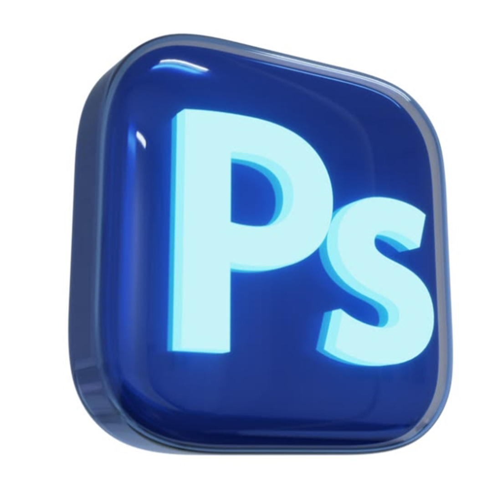
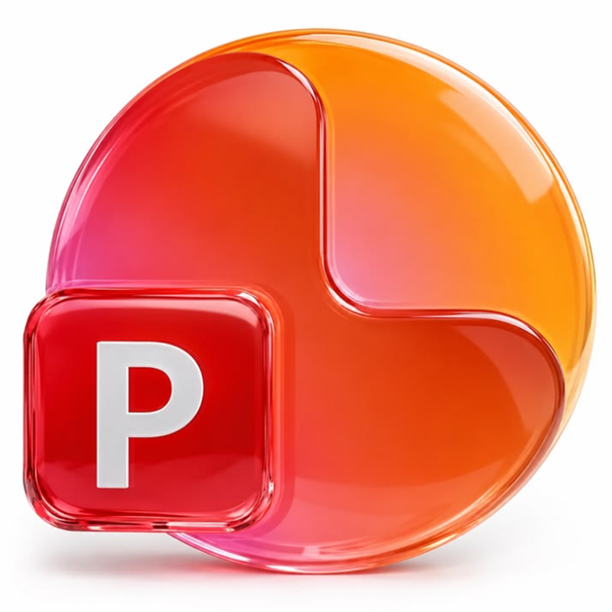
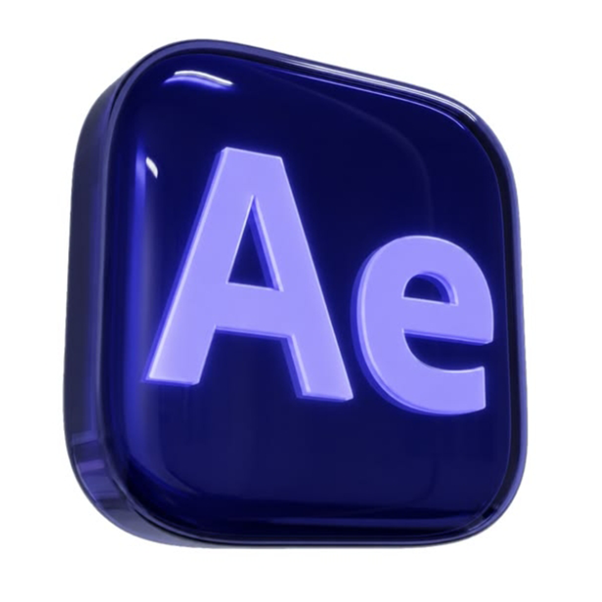
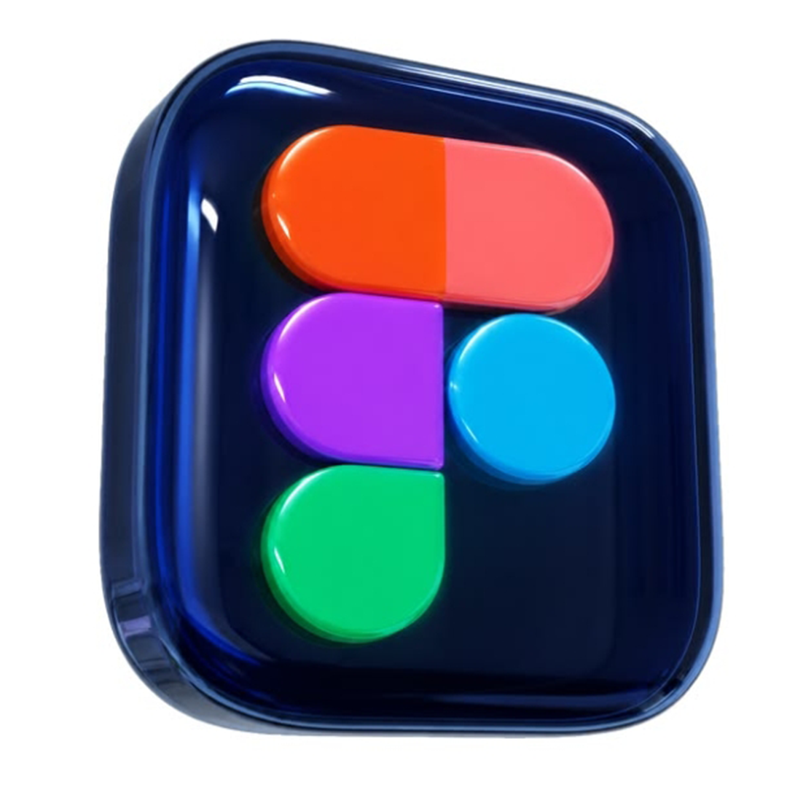

Técnico de Suporte Informático Desenvolvedor Web. Sou apaixonado por tecnologia, programação e inovação. Desenvolvo soluções digitais e procuro transformar ideias em experiências úteis e simples.

Sou estudante e profissional em formação na área de Tecnologias de Informação (CV4 em Técnico de Suporte Informático). Tenho interesse em suporte informático, desenvolvimento web, redes e sistemas. Valorizo a aprendizagem contínua, o trabalho em equipa, a responsabilidade e a inovação para resolver problemas de forma criativa.